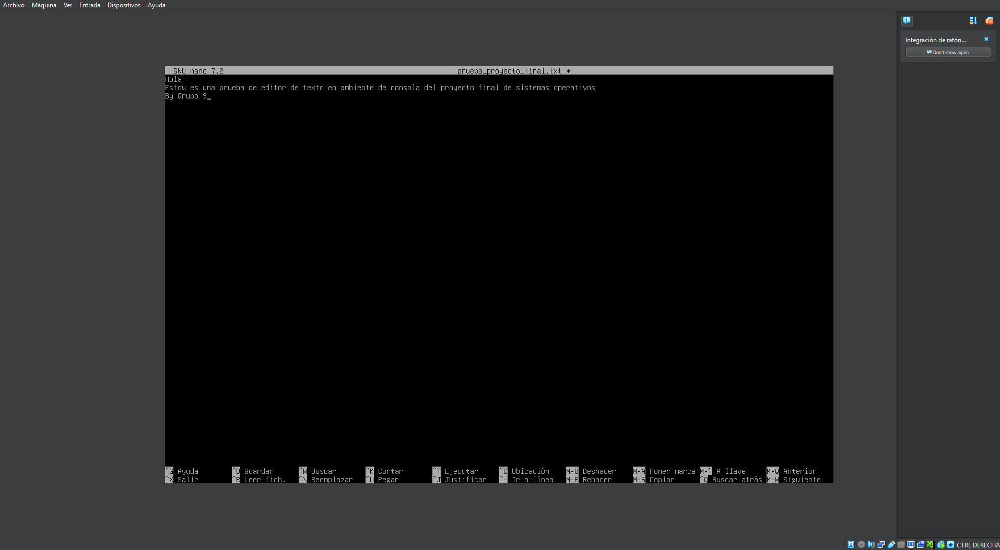
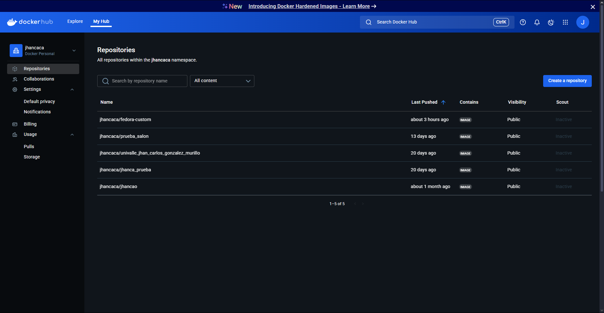

En este apartado se realiza la instalación de dos distribuciones de Linux: una con entorno gráfico y otra
en modo consola. Se configura cada una correctamente en máquinas virtuales, mostrando todo el proceso
con evidencias visuales.
1.1 Instalación en ambiente gráfico
Se realizó la instalación de la distribución Linux asignada en una máquina virtual con entorno gráfico.
Se configuraron correctamente los componentes del sistema, incluyendo dos navegadores y dos editores de
desarrollo.
1.2 Instalación en ambiente consola
Se instaló la versión de la misma distribución en modo consola. Se habilitó la conexión a internet y se
instalaron herramientas básicas como make, git y curl.
2Editores y Entornos
Esta sección muestra cómo se instalan y configuran diferentes editores de texto o entornos de desarrollo
dentro de las distribuciones Linux utilizadas. El objetivo es dejar listos los entornos para facilitar
el trabajo posterior.
2.1 Instalación de editores y entornos
En ambas distribuciones se instalaron al menos dos editores de texto o entornos de desarrollo (por
ejemplo, Vim y Nano en consola, Sublime Text y Atom en modo gráfico).

3Automatización con Bash
Aquí se desarrollan dos scripts en Bash: uno pensado para ejecutarse desde el entorno gráfico y otro
desde la consola. Ambos automatizan tareas útiles del sistema y se explican con ejemplos funcionales.
3.1 Script en entorno gráfico
Se desarrolló un script Bash para automatizar una tarea (como limpieza o backup), el cual se ejecuta
desde el entorno gráfico como una aplicación.
3.2 Script en entorno consola
Se creó otro script, ahora ejecutado desde la terminal, con una función similar de automatización.
4Docker
Se presenta la instalación completa de Docker Desktop y la creación de una imagen personalizada
utilizando un Dockerfile. Luego, se lanza un contenedor basado en esta imagen, demostrando que funciona
correctamente.
4.1 Instalación de Docker Desktop
Se instaló Docker Desktop en el sistema anfitrión (Windows, Linux o Mac) y se verificó que funciona
correctamente.
4.2 Creación de imagen Docker
Se creó una imagen personalizada mediante un Dockerfile, incluyendo herramientas como editores y
utilidades básicas.
4.3 Creación de contenedor
Se ejecutó un contenedor a partir de la imagen creada y se comprobó su correcto funcionamiento.
5Docker Hub
En esta parte se modifica la imagen Docker previamente creada para añadir herramientas adicionales, y
luego se publica en Docker Hub. Se muestran los pasos realizados y el acceso público a la imagen.
5.1 Modificación de imagen Docker
La imagen Docker fue modificada para añadir nuevas aplicaciones (como herramientas ofimáticas o entornos
adicionales).
5.2 Publicación en Docker Hub
Se creó un repositorio en Docker Hub y se subió la imagen modificada, asegurando su disponibilidad
pública.

6Kubernetes
Se instala Kubernetes dentro de Docker Desktop y se crea un pod utilizando la imagen personalizada. Esta
sección demuestra el despliegue y funcionamiento básico de un contenedor en un entorno Kubernetes.
6.1 Instalación en Docker Desktop
Kubernetes fue habilitado dentro de Docker Desktop. Se realizaron las configuraciones necesarias para su
funcionamiento
<
6.2 Creación y ejecución de un pod
Se creó un pod que ejecuta la imagen previamente trabajada. Se verifica su correcto despliegue en el
entorno Kubernetes.
.webp)
.webp)